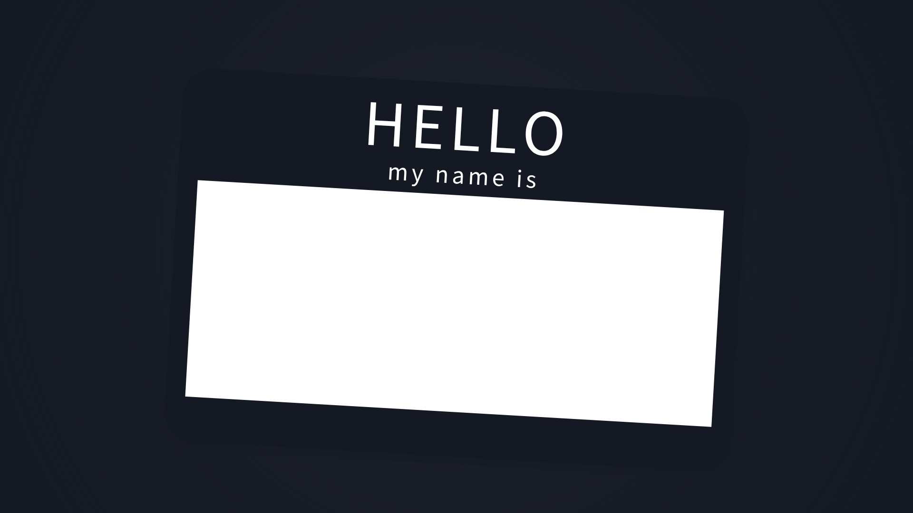
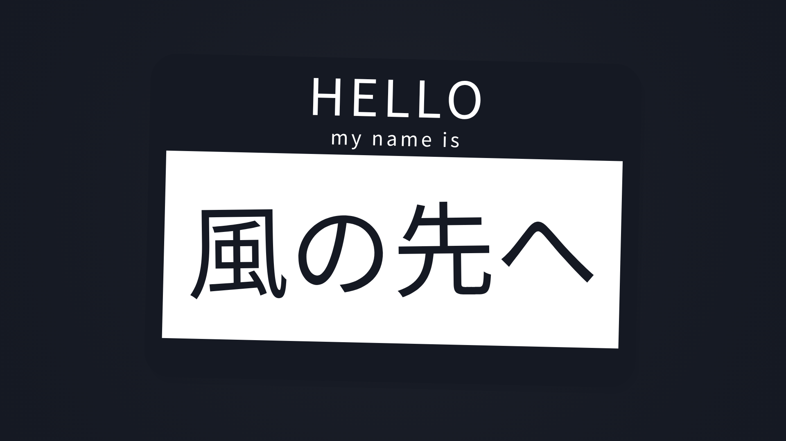
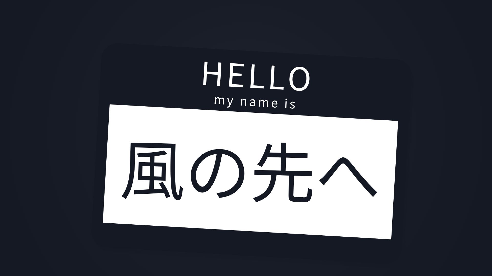
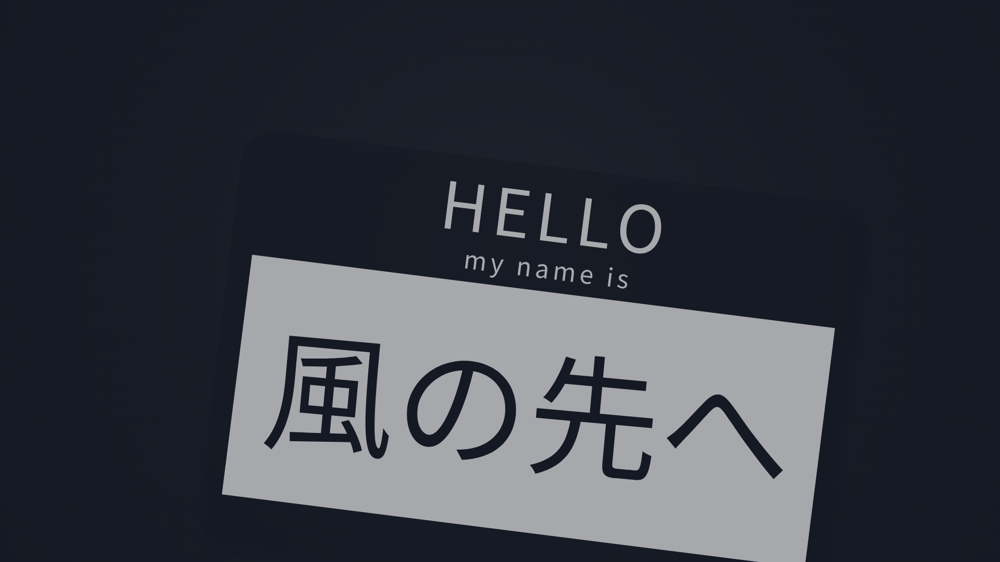
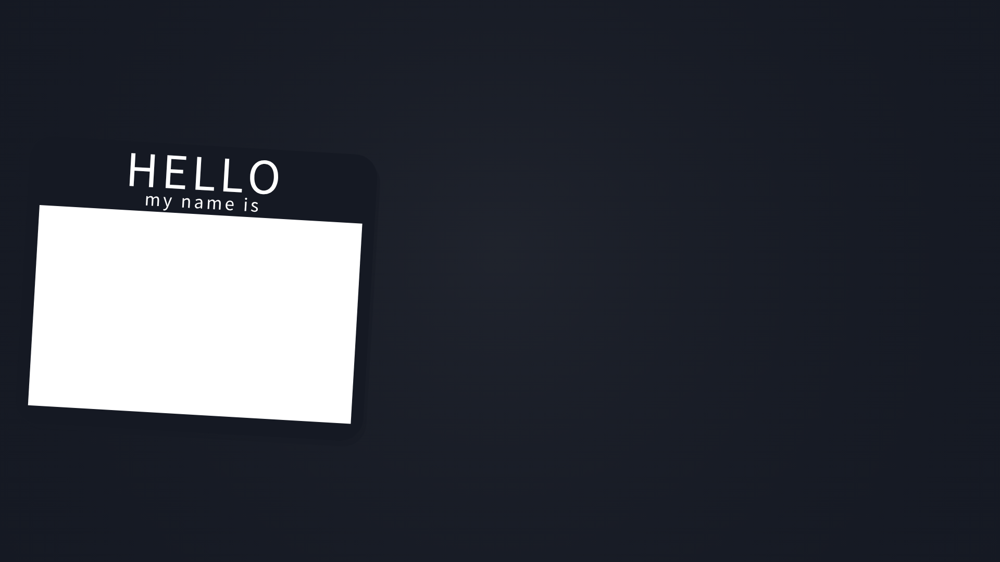
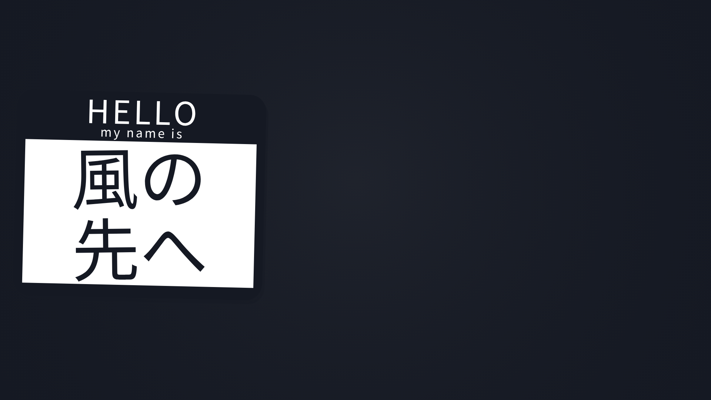
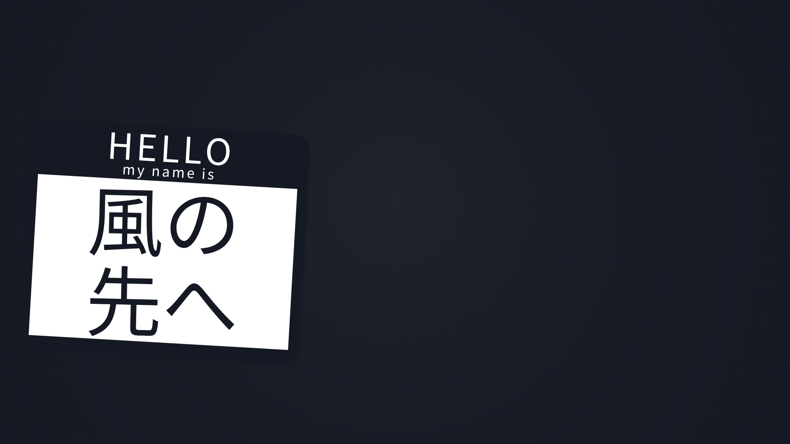
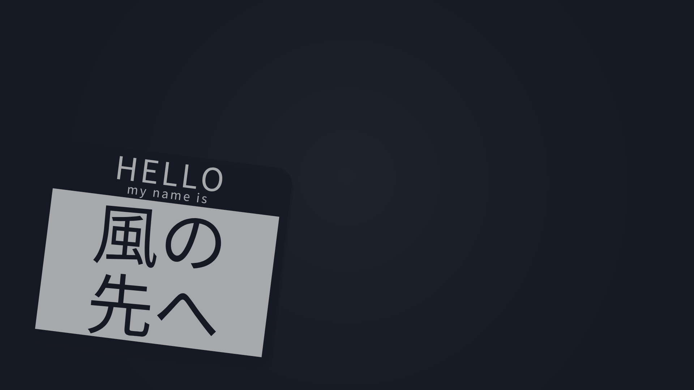

badge-landscape-hello-current
circle center=(.5,0.42), radius=.2 short side; seed704; 風の先へ
before




after




同条件・native時計・アニメ領域だけのMP4。左:元の全画面演出、右:C回避recipe。独立視覚レビューは未判定。名札portraitのanchor候補は板の縦横比/見出し/学級欄を維持し、入退場の元の画面上centerへ接続。旧anchor02は入場移動大幅短縮。physical候補は紙.6/文字>=.7を分けて入場非短縮・紙height比での退場距離を保つ。いずれも元の動き同一とは扱わない。landscape旧across候補は未受入。カチンコlandscapeはセル内ラベル下に値を整列。今回HELLO横は紙.7/幅measure.8/headerMeasure.8（header高.30→.24、白欄高.58→.70）、主字はnative floor以上。板aspectは1.515→1.212、主字改行が変わる。fixed offsetで元q/z時計・回転・入退場変位を維持（anchor接続なし）。単Noto代替書体の限定検査。
circle center=(.5,0.42), radius=.2 short side; seed704; 風の先へ







